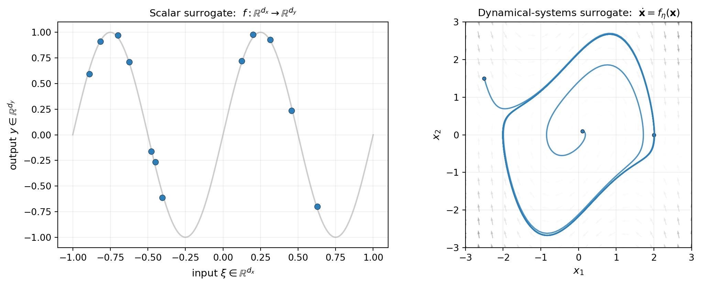
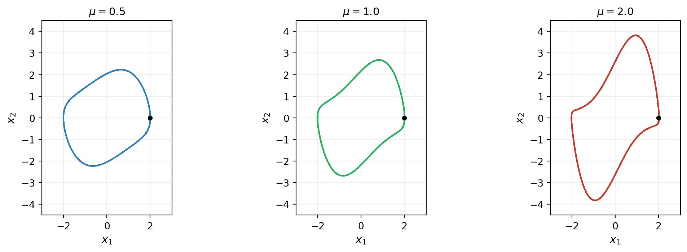
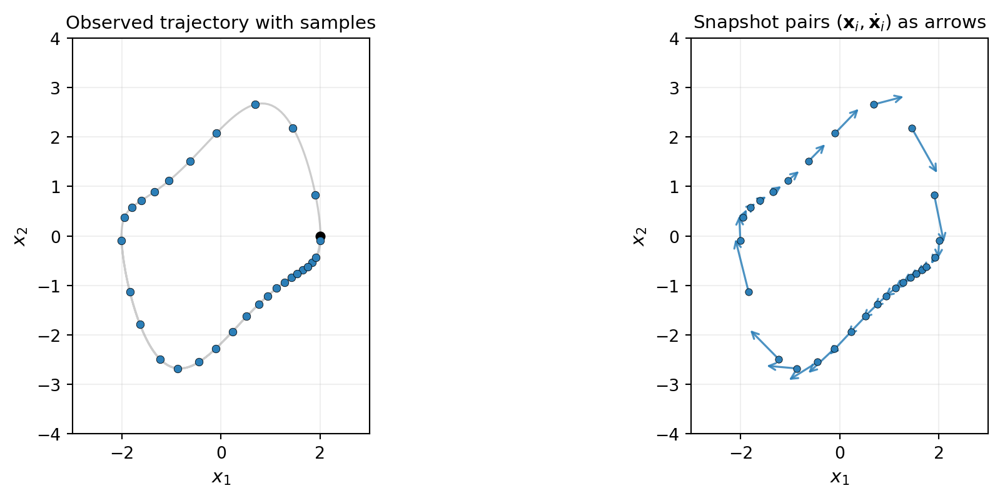
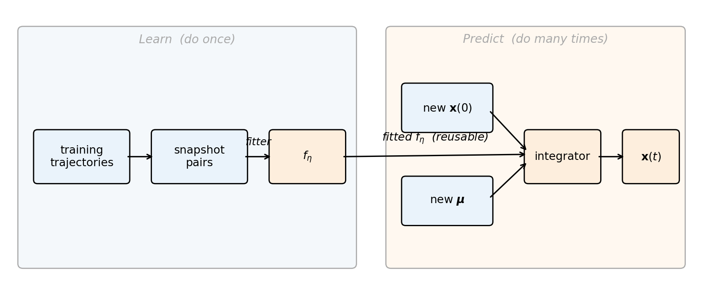
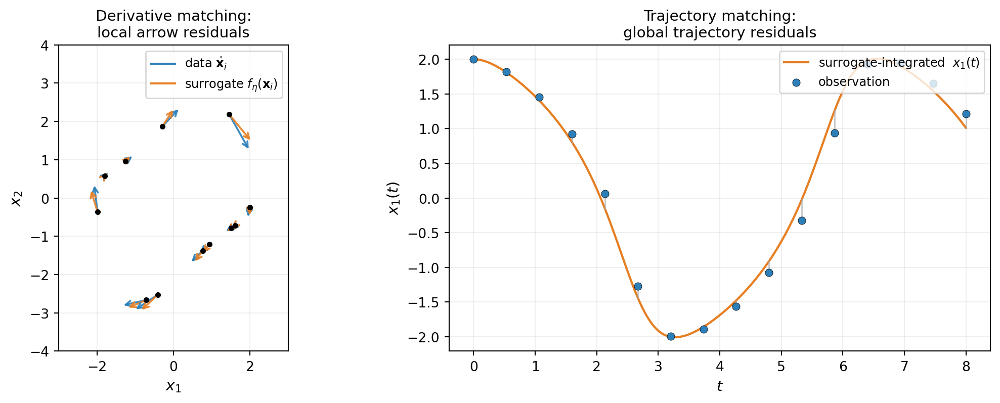

Learning Dynamical Systems
PyApprox Tutorial Library
Approximating ODE right-hand sides from observed trajectory data to enable cheap forward prediction at any initial condition or parameter.
Learning Objectives
After completing this tutorial, you will be able to:
- Explain what an ODE right-hand side is and why approximating it is the natural surrogate target for dynamical systems
- Identify the snapshot pairs \((\inputs_i, \dot{\inputs}_i)\) that constitute training data for derivative matching
- Describe the two-step learn the rule, then integrate architecture
- Contrast derivative matching with trajectory matching and decide when each is appropriate
- Decide when dynamical-systems learning is the right tool relative to scalar surrogates, operator learning, or direct simulation
Prerequisites
This tutorial extends the surrogate-modeling ideas from The Surrogate Modeling Workflow from static input-output maps to time-evolving systems. Familiarity with ordinary differential equations and basic finite-difference derivative approximation is helpful. Familiarity with Operator Learning is not required, but readers coming from that tutorial will recognize the parallel structure — we revisit the connection below.
The Time-Evolution Problem
Many simulators produce trajectories rather than scalar outputs. A chemical reactor’s species concentrations evolve via a stiff ODE; a population model predicts predator and prey densities over time; an orbiting satellite’s position and velocity trace out a curve in phase space. The expensive part of each is the time integration: given an initial state and parameters, march forward through many time steps to compute the trajectory.
If we want to evaluate this at hundreds or thousands of operating conditions — different initial states, different physical parameters — the time integration is the bottleneck. A scalar surrogate fit to \(\inputs \mapsto y(\tfinal)\) would compress the simulator to a cheap input-output map, but only at a single final time. If the trajectory itself is the quantity of interest — if we care about \(y(t)\) at every \(t\), or want to extrapolate to longer horizons than appeared in training — we need a surrogate that produces trajectories rather than single output values.
The idea behind dynamical-systems learning is that the trajectory is not the surrogate target; the rule that generates trajectories is. If we can learn the ODE’s right-hand side from data, we can integrate it forward from any initial condition and any parameter value, obtaining trajectories at any desired horizon for the cost of a cheap ODE solve.
From Inputs-to-Outputs to Rules-of-Motion
A scalar surrogate approximates a map \(f : \Reals{\dinputs} \to \Reals{\doutputs}\) between Euclidean spaces. A dynamical-systems surrogate approximates an evolution rule — a function \(f_{\params}(\state, t, \boldsymbol{\mu})\) such that the ODE
\[ \frac{\dd \state}{\dd t} = f_{\params}(\state, t, \boldsymbol{\mu}) \tag{1}\]
reproduces observed trajectories. The decision variables \(\params\) are the parameters of the surrogate (e.g. polynomial coefficients), \(\state \in \Reals{\dstates}\) is the dynamic state, and \(\boldsymbol{\mu}\) collects any system parameters that are constant during a trajectory but may vary between trajectories.
Once \(f_{\params}\) is learned, any initial condition \(\state(\tinit)\) and any parameter value \(\boldsymbol{\mu}\) can be integrated forward without rerunning the original simulator. The fitted rule is the reusable artifact; trajectories are computed from it on demand.
Figure 1 contrasts the two settings.
The conceptual leap is the right panel: the arrows are what the surrogate is, and the curves are what the user observes. The two are tied: trajectories are integral curves of the vector field, and the surrogate has succeeded when its arrows generate trajectories close to the observed ones.
NoteConnection to operator learning
If you have read Operator Learning, you may notice that an ODE solver is itself an operator: given an initial condition, it produces the entire trajectory \(\state(t)\) as a function of time. The operator-learning framework applied to dynamical systems would directly parametrize the flow map \(\Phi_T : \state(0) \mapsto \state(T)\) as a function-to-function map, with training data consisting of pairs \((\state(0), \state(T))\). Dynamical-systems learning makes a different choice: it parametrizes the local rule \(f_{\params}\) that generates the flow.
Both choices carry equivalent information in principle — \(f\) determines \(\Phi_T\) via integration — but they have different practical properties. Parametrizing \(f\) is more local (each snapshot constrains the rule at one state), transfers across time horizons (the same \(f\) works for \(T = 1\) and \(T = 100\)), and naturally exposes physical structure (Hamiltonian form, conservation laws) at the level of the equations of motion rather than at the level of integrated trajectories. The trade-off is that prediction requires an ODE solve at evaluation time, where a direct flow-map surrogate gives trajectories as a single function evaluation.
A Running Example: Van der Pol Oscillator
We use the parametric Van der Pol oscillator as a concrete example throughout this tutorial and the next few:
\[ \dot x_1 = x_2, \qquad \dot x_2 = \mu\,(1 - x_1^2)\, x_2 - x_1. \tag{2}\]
The state \(\inputs = (x_1, x_2) \in \Reals{2}\) is two-dimensional, so we can visualize everything in a phase plane. The parameter \(\mu > 0\) controls the strength of the nonlinear damping: \(\mu \to 0\) gives a linear harmonic oscillator with closed circular orbits; \(\mu\) large gives stiff relaxation oscillations. For all \(\mu > 0\) the system has a stable limit cycle — every trajectory approaches the same closed orbit regardless of initial condition.
Figure 2 shows trajectories at three values of \(\mu\), illustrating how the rule of motion — and the limit cycle it generates — depends on the parameter.

The task we set ourselves is: from a handful of observed trajectories at known \(\mu\) values, learn \(f_{\params}(\inputs, \mu)\) such that integrating Equation 1 from any \(\inputs(\tinit)\) at any \(\mu\) reproduces dynamics consistent with the data.
Where the Training Data Comes From
The least obvious step for newcomers is the data: we observe trajectories, but the surrogate target is the time derivative, not the trajectory itself. Snapshot pairs \((\inputs_i, \dot{\inputs}_i)\) are the bridge.
A trajectory observation is a sequence \(\{\inputs(t_k)\}_{k=0}^{K}\) at sampled times \(\{t_k\}\). The derivative at each interior time is approximated by finite difference — second-order central differences for evenly spaced samples:
\[ \dot{\inputs}_k \approx \frac{\inputs(t_{k+1}) - \inputs(t_{k-1})}{t_{k+1} - t_{k-1}}. \tag{3}\]
Each interior observation \((\inputs(t_k), t_k)\) becomes one snapshot pair \((\inputs_i, \dot{\inputs}_i)\) in the training set. Across multiple trajectories and multiple time points, a few hundred snapshot pairs typically suffice for a low-dimensional system like Van der Pol.
Figure 3 shows the data extraction visually.

For parametric systems each snapshot also carries the system-parameter value \(\boldsymbol{\mu}_i\) in effect on its source trajectory. The augmented snapshot \((\inputs_i, \boldsymbol{\mu}_i, \dot{\inputs}_i)\) is what the parametric surrogate sees — the next tutorials make this concrete.
The Two-Step Architecture
A dynamical-systems surrogate has two cleanly separated stages:
- Learn. From snapshot pairs, fit the surrogate parameters \(\params\) of \(f_{\params}\). This is a standard surrogate-fitting problem with the ansatz choices (basis expansion, kernel, neural network) familiar from scalar surrogate modeling.
- Predict. Given any initial condition \(\state(\tinit)\) and any parameter value \(\boldsymbol{\mu}\), integrate \(\dot{\state} = f_{\params}(\state, t, \boldsymbol{\mu})\) forward in time using a standard ODE solver to obtain the trajectory.
The two stages are independent: training happens once and produces \(f_{\params}\); prediction happens many times for different initial conditions and parameter values. The fitted \(f_{\params}\) is the asset that amortizes training cost.
Figure 4 lays out the data flow.

Two Ways to Fit: Derivative Matching vs. Trajectory Matching
The two-step architecture leaves room for two different fitting objectives, each measuring a different kind of agreement between the surrogate and the data.
Derivative matching compares predicted derivatives to finite-difference estimates at the snapshot points:
\[ \mathcal{L}_{\text{deriv}}(\params) = \frac{1}{2\nsamples} \sum_{i=1}^{\nsamples} \| f_{\params}(\inputs_i, t_i, \boldsymbol{\mu}_i) - \dot{\inputs}_i \|^2. \tag{4}\]
This is the standard regression objective: the model predicts the target at each sample, residuals are squared and summed. When \(f_{\params}\) is linear in \(\params\) (as for a polynomial basis expansion), \(\mathcal{L}_{\text{deriv}}\) is quadratic and minimized in closed form by linear least squares. Fast, well-conditioned, the workhorse method.
Trajectory matching integrates the surrogate ODE forward from a known initial state and compares the predicted trajectory to observed trajectory values:
\[ \mathcal{L}_{\text{traj}}(\params) = \frac{1}{2} \sum_k \| \state_{\params}(t_k) - \state_{\text{obs}}(t_k) \|^2, \qquad \dot{\state}_{\params} = f_{\params}(\state_{\params}, t), \quad \state_{\params}(\tinit) = \state_{\text{obs}}(\tinit). \tag{5}\]
The forward integration of \(\state_{\params}\) inside the loss makes this a nonlinear optimization problem, even when \(f_{\params}\) itself is linear in \(\params\). Each evaluation requires an ODE solve and each gradient an adjoint backward sweep. Substantially more expensive than derivative matching per iteration.
Figure 5 shows what each loss “sees”.

The two losses agree at the true \(\params\) but have different conditioning properties. Derivative matching exploits locality: each snapshot constrains \(f_{\params}\) at one state, and dense clean snapshots make the regression well-determined. Trajectory matching propagates information across time through the forward integration — useful when snapshots are sparse, when finite-difference derivative estimates are too noisy to fit directly, or when the trajectory shape carries information that pointwise derivatives lose.
The recommended workflow: start with derivative matching. Use trajectory matching when derivative matching’s noise floor (set by finite-difference derivative quality) is the limiting factor or when only trajectory observations are available without reliable derivative estimates.
When Dynamical-Systems Learning Is the Right Tool
Dynamical-systems learning is the right tool when:
- Trajectories are the quantity of interest. You need \(\state(t)\) at many times, not just \(\state(\tfinal)\), or you want to extrapolate to time horizons longer than appeared in training.
- Many initial conditions or parameter values must be evaluated and the time integration is the bottleneck. A few hundred training snapshots amortize across thousands of predictions.
- The dynamical structure is preserved between training and prediction: the same ODE governs both, only the initial conditions or system parameters vary.
It is not the right tool when:
- You only need scalar outputs at a single final time: use a polynomial chaos expansion, function train, or Gaussian process on \(\inputs \mapsto y(\tfinal)\). These are simpler and require no integration at prediction.
- The simulator is cheap relative to the cost of constructing and validating the surrogate. The training overhead has to be worthwhile.
- The system has memory or hidden state that breaks the Markovian \(\dot{\state} = f(\state, t)\) assumption. Partial observations of a higher- dimensional system, time-delayed dynamics, or systems with conserved quantities and structure (Hamiltonian systems, dissipative thermodynamics) may require specialized surrogates that respect the structure — Hamiltonian learning, covered in Hamiltonian Systems, is the canonical example.
Summary
A dynamical-systems surrogate approximates the right-hand side \(f_{\params}\) of an ODE rather than individual trajectories. One fitted \(f_{\params}\) generates trajectories for any initial condition and any system parameter, which is what makes the framework valuable in the multi-query regime.
Training data is snapshot pairs \((\inputs_i, \dot{\inputs}_i)\) extracted from observed trajectories via finite-difference derivative estimates. The architecture is two cleanly separated stages: learn \(f_{\params}\) from snapshots, then integrate to predict at any initial condition and any parameter.
Two fitting paradigms exist:
- Derivative matching is local, closed-form for linear-in-parameters surrogates, and is the workhorse method. Cheap, fast, well-conditioned.
- Trajectory matching is global, requires forward integration plus an adjoint backward pass per gradient, and is more expensive per iteration. It earns its cost when derivatives are noisy or trajectory observations are sparse.
The next tutorial, Derivative Matching, realizes the two-step pipeline concretely with a polynomial basis expansion and PyApprox’s LeastSquaresFitter, working through the Van der Pol example end-to-end.
References
- Brunton, S. L., Proctor, J. L., & Kutz, J. N. (2016). Discovering governing equations from data by sparse identification of nonlinear dynamical systems. Proceedings of the National Academy of Sciences, 113(15), 3932–3937. The SINDy framework: derivative matching with a sparse polynomial library.
- Chen, R. T. Q., Rubanova, Y., Bettencourt, J., & Duvenaud, D. (2018). Neural ordinary differential equations. Advances in Neural Information Processing Systems 31. Trajectory matching with neural-network RHS and adjoint-based training.